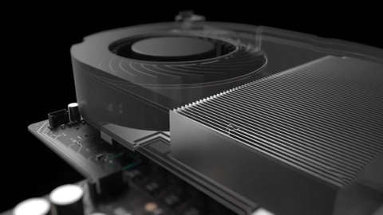

How Much Should Xbox Project Scorpio Cost? - GameSpot Q&A
Below you can find our thoughts on how much Project Scorpio should cost.

Jimmy Thang, Technology Editor | $500
If I had to guess, I’d wager that Project Scorpio will debut at $499. I think the PS3 showed that users are resistant to spending $599 for a console (despite the fact that it was actually kind of a steal, being one of the most affordable Blu-ray players at the time). I think Microsoft recognizes that and won’t go above $500 as a result.
Having said that, on paper, the console is poised to be noticeably more powerful than the PS4 Pro, which currently costs $399. I would be very surprised if Microsoft came out at roughly the same price, considering Scorpio's beefier specs. So, I’m going with $499. Think that’s too expensive? Well, I’m willing to bet that Microsoft would say, “That’s what the Xbox One S is for.” It helps that Project Scorpio is backwards compatible with the S, even down to the peripherals.
$500 for Project Scorpio seems pricey, but it puts it within striking distance of its competition in the PS4 Pro, while firmly establishing Scorpio as a machine with better specs and more capability. People who will benefit the most from a Scorpio are those who own a 4K TV, and while the price of that technology is rapidly dropping, that just means that Scorpio can start out at a premium and drop in price early in 2018.
The more interesting question will be how (and if) Microsoft handles virtual reality. Part of the reason for a system like Scorpio has to be in preparation of an increased emphasis on VR, but what would an Xbox hardware bundle look like? Sony's PlayStation VR is still hard to find in stores, and the launch bundle for that system (even without a console) was $500. I'd expect, sometime in 2018, Microsoft will offer up an all-in-one VR console package in the $800 range--and Project Scorpio will be at its core.
Eddie Makuch, News Editor | $500
No Caption Provi
For a long time now, Microsoft has referred to Project Scorpio as a "premium" device. It will of course be more expensive than Xbox One S, and my estimation is that it will go for $500. That price point steers clear of $599, which does not have good memories attached to it. Given the guts of the console, anything under $500 seems an unlikely scenario. At the same time, Microsoft has been clear in its messaging for Scorpio that this is a console aimed at players who want a higher-end experience--and will presumably pay for it. Doubling down on this, Phil Spencer has said Scorpio is not expected to sell anywhere near as well as Xbox One S. With the reveal of Scorpio's specs now out of the way, it will be intriguing to see where Scorpio comes in for price. Expect all to become clear at E3, if not sooner.
Michael Higham, Associate Tech Editor | $500
Considering how much power is under the hood, I can't see Project Scorpio priced any lower than $499. Also, the PlayStation 4 Pro is currently $399, and who knows if there will be a holiday season price cut this year. Of course, if Microsoft is willing to sell the console at a lower price, the barrier to entry will be lower and we’ll all win. But I'm not holding my breath. Scorpio is coming with a robust cooling solution to keep that 8-core 2.3GHz CPU and 6 teraflop GPU system-on-chip (SOC) cool, not to mention it’ll come equipped with 12GB of GDDR5 RAM. This is all-powerful stuff, and I wouldn't be surprised if it's expensive to manufacture.
I used to fake being sick to stay home from school as a kid, so I watched a lot of The Price is Right--you can bet on me.
Writer : Berke KIRAN
HOME PC PS4 XBOX ONE TV/FILM REVIEWS Sign In